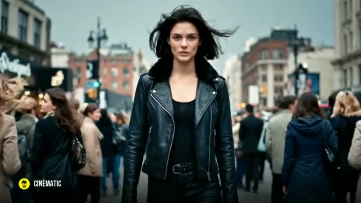
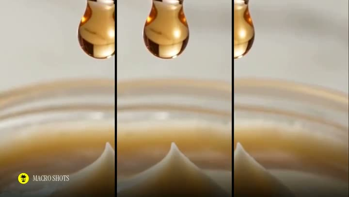
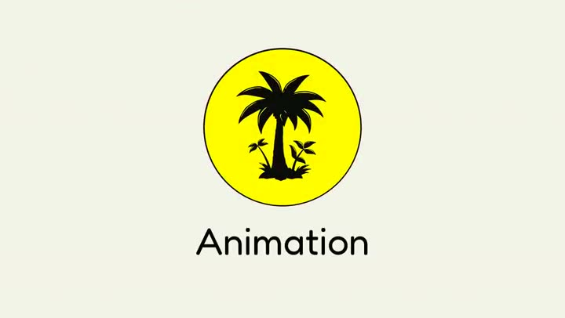
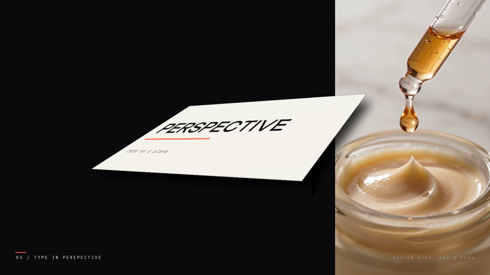

Adverts people
actually watch.
We write it, shoot it, cut it, post it — then work on the parts most studios leave out: the site, the search results and the schedule that keep a business in front of people who weren't already looking for it.
Film
Made in-house, script to grade. Five ways to make the same business look like the obvious choice.
Social clips
Vertical video for the feed — offers, demos, openings and stories, cut to the first second.
9:16 · 15–60s 02Cinematic
Product film with no actors and no location. Camera moves and light you could not hire.
16:9 · 15–60s
03Macro shots
Droplets, pours, powder, condensation, fabric, skin — the detail that says made properly.
Detail
04Animation
Cartoon, anime, 3D and motion graphics — a look no camera can be pointed at.
Any ratio
05Editing
You have the footage. We give it pacing, occlusion, sound and a grade that survives comparison.
Your footage
Media
The film is half the job. This is the half that decides whether anyone sees it.
Growth
What happens after the film: the site, the search results, and the month that keeps both moving.
One idea. Every platform. Every week.
A retainer is the whole job on a rolling month — the films, the site, the search, the posting and the report at the end of it. No packages, no fixed bundles: we agree what the month needs and then make it.
How the month works ↗- Films, cut from one shoot
- Posting, every platform
- Site pages & fixes
- Search position, worked on
- Brand held to one system
- Weekly reports
Process
Three steps. You approve the cut, not the invoice.
Brief
What you sell, who you are up against, and what a customer needs to hear before they pick up the phone.
Make
Script, frame, shoot or build, cut, grade, caption. You see the first frame before anything moves.
Publish & report
Sized and captioned per platform, posted on schedule, then we look at what it actually did.
Tell us the business.
We'll tell you the ad.
hello@sixsixstudio.com
One message is enough: what you sell and who you are trying to reach. We'll come back with what we would make first, and why.